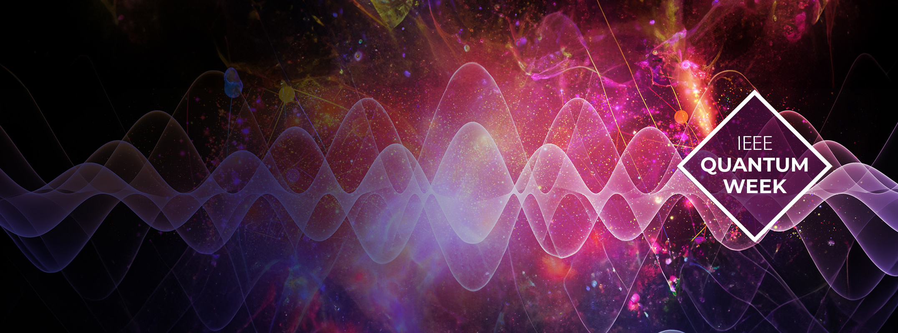

IEEE Quantum Week
International Workshop on
Quantum Computing and
Reinforcement Learning
(QCRL)
2026
QCRL @ IEEE Quantum Week 2026, Metro Toronto Convention Centre Toronto, Ontario, Canada
Introduction
As quantum computing enters a new phase of hardware-aware algorithm design and AI-driven automation, reinforcement learning is emerging as a key paradigm for both quantum-enhanced decision-making and the control of quantum systems themselves. QCRL 2026 will convene researchers from quantum computing, artificial intelligence, machine learning, and quantum engineering to explore this two-way frontier. Topics of interest include quantum reinforcement learning, hybrid quantum-classical agents, reinforcement learning for quantum control, calibration, compilation, mapping, qubit reuse, error correction and mitigation, RL-driven quantum architecture search, benchmark design, reproducibility, and application-driven studies in areas such as scientific discovery, critical infrastructure, cybersecurity, and finance. The workshop will provide a timely forum for aligning algorithmic advances with the realities of near-term quantum hardware and experimental constraints. The goal of the workshop is not only to showcase recent advances, but also to define the next generation of research challenges at the intersection of learning, quantum hardware, and scalable system design. By fostering interdisciplinary exchange across theory, software, and experimentation, QCRL 2026 seeks to accelerate the development of robust, testable, and practically relevant intelligent quantum technologies.
Go back to the top
Call For Papers
Topics
In this workshop, we invite the research community in quantum information science and reinforcement
learning/artificial intelligence to submit works related to the
proposed integration of quantum computing and reinforcement
learning/ artificial intelligence, revolving around the following
topic areas:
- Theoretical foundations and algorithmic advances in quantum reinforcement learning
- Hybrid quantum-classical reinforcement learning agents and systems
- Quantum reinforcement learning in noisy, dynamic, and resource-constrained settings
- Benchmarking, reproducibility, and evaluation of QRL algorithms
- Quantum reinforcement learning for reasoning, planning, and sequential decision-making
- Multi-Agent quantum reinforcement learning
- Quantum reinforcement learning for scientific discovery and real-world applications
- Reinforcement learning for quantum control, calibration, and feedback
- Reinforcement learning for quantum error correction and quantum error mitigation
- Reinforcement learning for quantum circuit compilation, mapping, transpilation, and qubit reuse
- Reinforcement learning for quantum architecture search, circuit optimization, and program synthesis
- Quantum or classical reinforcement learning for quantum sensing and quantum communication
- Hardware-aware learning methods for near-term and experimental quantum platforms
- Trustworthy, robust, and secure QRL, including adversarial settings and distributed/federated scenarios
- RL-enabled intelligent quantum system design across the quantum computing stack
The list above is by no means exhaustive, as the aim is to foster the debate around all aspects of the suggested integration
Submission
Guidelines
Papers must be formatted according to the IEEE Transactions format and limited to 4 pages, including references.
We welcome submissions across the full spectrum of theoretical and practical work, including research ideas, methods, tools, simulations, applications or demos, practical evaluations, and surveys.
All papers will undergo a single-blind peer-review process and will be evaluated based on novelty, technical quality, potential impact, clarity, and reproducibility (where applicable).
Submissions will be managed via EasyChair.
Important Dates
Be mindful of the following dates:
- Workshop paper abstract due: June 22, 2026
- Full workshop paper due: June 29, 2026
- Workshop paper acceptance notification: July 20, 2026
- Workshop paper author registration: July 27, 2026
- Final workshop paper for proceedings due: July 27, 2026
Proceedings
The accepted papers will appear on the workshop website and are included in the IEEE Quantum Week conference proceedings.
Go back to the top
Workshop Program
Go back to the top
Organization
Steering Committee
Organizing Committee
- Samuel Yen-Chi Chen, Wells Fargo Bank, USA
- Joongheon Kim, Korea University, Korea
- Soohyun Park, Sookmyung Women’s University, Korea
- Huan-Hsin Tseng, Brookhaven National Laboratory, USA
- Fan Chen, Indiana University Bloomington, USA
- Qiang Guan, Kent State University, USA
- Ying Mao, Fordham University, USA
- Weiwan Jiang, George Mason University, USA
- Muhammad Ismail, Tennessee Technological University, USA
- Khoa Luu, University of Arkansas, Fayetteville, USA
- Zhiding Liang, The Chinese University of Hong Kong, Hong Kong
- Prayag Tiwari, Halmstad University, Sweden
- Muhammad Usman, CSIRO's Data61, Melbourne, Australia
- Jun Zhuang, Boise State University, USA
- Mahdi Chehimi, American University of Beirut, Lebanon
- Alberto Marchisio, New York University Abu Dhabi, UAE
Program Committee
- Jun Qi, Hong Kong Baptist University, Hong Kong
- Chao-Han Huck Yang, NVIDIA, Taiwan
- Pin-Yu Chen, IBM Research, USA
- Su Fong Chien, MIMOS Berhad, Malaysia
- Nico Meyer, Fraunhofer IIS, Germany
- Kuan-Cheng Chen, Imperial College London, UK
- Chen-Yu Liu, National Taiwan University, Taiwan
- Yen-Jui Chang, Chung Yuan Christian University, Taiwan
- Yun-Cheng Tsai, National Taiwan Normal University, Taiwan
- Junghoon Justin Park, Seoul National University, Korea
- Yifeng Peng, Stevens Institute of Technology, USA
Go back to the top
Venue
How to Reach the Venue
Go back to the top